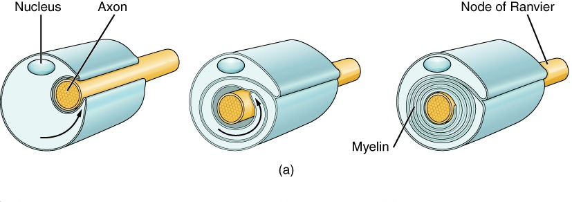

DX.9 — Syndrome de Guillain-Barré 🚩 E2
1. Définition
Le syndrome de Guillain-Barré (SGB) est une polyradiculoneuropathie aiguë qui touche les racines et les nerfs périphériques.ean
L'Académie européenne de neurologie (EAN) et la Peripheral Nerve Society (PNS) retiennent cette définition dans la ligne directrice acceptée le 28 août 2023.ean
Le terme polyradiculoneuropathie aiguë décrit l'atteinte récente des racines et des troncs nerveux périphériques.ean
2. Épidémiologie (Suisse, puis Europe)
Les sources lues ne retiennent aucune incidence nationale suisse, et les fréquences de ce chapitre viennent du registre espagnol.
Selon le registre hospitalier espagnol publié en 2024, l'incidence moyenne de 2018 à 2021 atteint 1,67 pour 100000 habitants.es
Cette série nationale compte 3147 séjours hospitaliers additionnés sur les années 2018, 2019, 2020 et 2021.es
L'incidence annuelle de ce registre atteint 1,78 pour 100000 habitants en 2018 et 1,71 pour 100000 habitants en 2019.es
L'incidence baisse à 1,41 pour 100000 habitants en 2020 et atteint 1,66 en 2021, sans augmentation pendant la pandémie.es
Le coefficient de corrélation avec l'infection à coronavirus est de moins 0,29, et le p de 0,36 reste non significatif.es
L'âge moyen de la cohorte espagnole est de 53,2 ans, avec un écart-type de 21,9 ans dans le registre.es
Les hommes représentent 63,9 pour cent des cas, et l'incidence masculine atteint 2,18 pour 100000 habitants.es
L'incidence féminine est de 1,18 pour 100000 habitants, et le rapport hommes sur femmes atteint 2,01.es
Entre 70 et 79 ans, le registre montre le pic d'incidence, à 3,26 pour 100000 habitants.es
La population couverte par le réseau hospitalier national espagnol atteint 47 millions d'habitants sur la période étudiée.es
Le séjour hospitalier médian dure 13 jours, avec un intervalle de 8 à 23 jours dans cette série.es
Une intubation orotrachéale a été nécessaire chez 10,4 pour cent des patients au cours du séjour hospitalier.es
Selon la revue médicale suisse parue en 2019, une polyneuropathie touche environ 3 à 4 pour cent des plus de 55 ans.rms
Ce pourcentage de 3 à 4 pour cent décrit les polyneuropathies en général et laisse de côté le syndrome de Guillain-Barré.rms
La même revue indique 77 polyneuropathies pour 100000 habitants aux Pays-Bas, chiffre étranger au syndrome de Guillain-Barré.rms
Le diabète explique 30 à 40 pour cent des polyneuropathies de cette revue, loin devant le syndrome aigu en fréquence.rms
Environ 30 pour cent des neuropathies chroniques restent sans cause dans le texte suisse, à l'opposé du profil aigu.rms
| Chiffre | Population | Année | Source |
|---|---|---|---|
| 1,67 pour 100000 | Espagne, séjours hospitaliers | 2018-2021 | European Journal of Neurology, 2024 |
| 2,18 pour 100000 chez les hommes | Même registre | 2018-2021 | Même article |
| 3,26 pour 100000 entre 70 et 79 ans | Même registre | 2018-2021 | Même article |
| Incidence suisse non lue | Suisse | 2026 | Absence de série nationale dans les sources de ce cours |
Le tableau réunit les repères européens de fréquence lus pour ce cours, faute d'une série suisse comparable.
3. Physiopathologie
La myéline de la cellule de Schwann permet au nerf périphérique de conduire le potentiel plus vite autour de l'axone.
Le schéma en couleur montre le noyau schwannien, l'axone, les tours de myéline et le nœud de Ranvier.

Le premier repère montre le noyau de la cellule de Schwann, cellule dont la membrane constitue la myéline.
Le deuxième repère montre l'axone, cylindre où circule le message nerveux avant l'accélération par la gaine.
Le troisième repère montre les lamelles de myéline et le nœud de Ranvier, zone dont l'atteinte ralentit la conduction.
Dans la forme démyélinisante, l'inflammation attaque la gaine et explique le ralentissement des conductions à l'électroneuromyogramme (ENMG).
Dans la forme axonale, la cible reste l'axone, et l'amplitude du potentiel chute tandis que la vitesse peut rester conservée.
La ligne directrice indique de chercher une diarrhée ou une infection respiratoire dans les 6 semaines précédentes.ean
La sensibilité de la diarrhée récente va de 13 à 18 pour cent, et sa spécificité va de 89 à 100 pour cent.ean
L'infection respiratoire a une sensibilité de 21 à 68 pour cent et une spécificité de 59 à 98 pour cent.ean
Environ un tiers des patients ne rapportent aucun de ces prodromes, et l'infection n'est pas exigée pour le diagnostic.ean
Le mécanisme retenu est une réponse immunitaire croisée après l'infection, les anticorps de l'agent pouvant aussi lier le nerf.
Cette lecture physiopathologique ne remplace pas la preuve directe d'un anticorps chez le patient examiné au lit.
L'anticorps anti-GQ1b se discute quand un syndrome de Miller Fisher est suspecté, situation réservée par la ligne directrice.ean
Le dosage large des antigangliosides a une valeur limitée dans la forme sensitivomotrice typique, et reste déconseillé en routine.ean
L'immunoglobuline intraveineuse agit en modulant cette réponse immune et relie la lésion du nerf au moyen du point 11.
Les échanges plasmatiques retirent des facteurs circulants et visent le même chaînon humoral par une autre technique.ean
| Perturbation | Ce que l'examen montre | Ce que le traitement vise |
|---|---|---|
| Inflammation de la myéline | Ralentissement des conductions à l'ENMG | Immunoglobuline ou échanges, selon le délai et la gravité |
| Atteinte axonale | Chute d'amplitude du potentiel | Le même traitement immun, avec une récupération axonale plus lente |
| Racines enflammées | Protéinorachie qui s'élève avec les jours | Le traitement ne se décide pas sur la protéinorachie seule |
Le tableau relie chaque lésion à l'examen qui la montre, et le traitement ne se choisit pas sur le mécanisme seul.
Le schéma en couleur reste une figure OpenStax publiée sous licence Creative Commons avec attribution, et non un dessin généré.
4. Démarche diagnostique
Le premier danger à écarter est une lésion centrale aiguë, accident vasculaire ou compression médullaire, qui change la minute suivante.
Une paralysie qui respecte la face et s'accompagne d'un niveau sensitif net oriente vers la moelle, et l'imagerie précède l'immunoglobuline.
Un déficit d'un seul territoire artériel, avec une aphasie ou une hémianopsie, oriente vers le cerveau et impose une imagerie urgente.
Le botulisme descend depuis les pupilles et la déglutition, avec des réflexes parfois encore présents, et ne se traite pas comme ce syndrome.
La myasthénie fluctue dans la journée et épargne souvent les réflexes, la jonction neuromusculaire n'étant pas la racine.
Une hypokaliémie sévère mime une tétraplégie quand le muscle ne se contracte plus, et le ionogramme précède tout traitement immun.
La mononévrite multiple est douloureuse, asymétrique et par à-coups, alors que ce syndrome reste grossièrement symétrique et ascendant.
La revue suisse de 2019 demande un avis neurologique devant un déficit asymétrique, aigu ou non longueur-dépendant.rms
La porphyrie aiguë s'accompagne souvent de douleurs abdominales et de troubles psychiques, que l'anamnèse cherche avant l'immunoglobuline.
L'intoxication au protoxyde d'azote touche surtout les cordons postérieurs et produit une ataxie plus qu'une paralysie flasque ascendante.
Le grade de handicap atteint 3 quand le patient ne parcourt dix mètres qu'avec une aide.ean
S'il ne parcourt plus dix mètres même aidé, le grade atteint 4, seuil retenu comme sévère dans les essais.ean
Le grade atteint 5 quand une ventilation assistée est nécessaire une partie de la journée, et l'échelle s'arrête à 6 au décès.ean
La plupart des essais ont inclus les grades 3 à 5, bande dans laquelle le traitement immun a été mesuré.ean
Un retard diagnostique est fréquent chez le petit enfant, la douleur et la rareté du syndrome brouillant les premiers jours.ean
| Diagnostic à écarter | Élément qui tranche | Piège | Conduite si le résultat est positif |
|---|---|---|---|
| Compression médullaire | Niveau sensitif et troubles sphinctériens | Les réflexes peuvent être abolis en phase de choc spinal | Imagerie de la moelle en urgence |
| Accident vasculaire cérébral | Territoire cortical ou du tronc | Une diplégie faciale existe aussi dans ce syndrome | Imagerie cérébrale et filière vasculaire |
| Botulisme | Pupilles et descente craniocaudale | Les réflexes sont parfois conservés | Antitoxine selon le centre de référence, pas d'immunoglobuline d'emblée |
| Mononévrite vasculitique | Asymétrie douloureuse par à-coups | La confluence peut mimer une polyneuropathie | Bilan de vasculite et avis spécialisé rapide |
Le tableau place les diagnostics graves avant les formes fréquentes, et la conduite change dès que l'un d'eux est confirmé.
5. Anamnèse ciblée et drapeaux rouges
La date du premier symptôme moteur se note en jours, le délai de deux semaines ou de quatre semaines décidant du traitement.ean
On demande une diarrhée dans les six semaines précédentes, sa spécificité étant haute quand elle est vraiment présente.ean
On demande aussi une infection respiratoire récente, qui soutient le diagnostic sans jamais le prouver à elle seule.ean
La fièvre prodromique a une spécificité qui peut atteindre 100 pour cent dans les études citées, même si elle manque souvent.ean
La fenêtre des prodromes précise la sensibilité et la spécificité de la diarrhée, de l'infection respiratoire et de la fièvre.ean
Prodromes infectieux
La diarrhée récente a une sensibilité de 13 à 18 pour cent, et la plupart des patients ne la rapportent pas.ean
Sa spécificité va de 89 à 100 pour cent et augmente la probabilité du syndrome quand la diarrhée est vraiment présente.ean
L'infection respiratoire est plus sensible, de 21 à 68 pour cent, cependant sa spécificité descend jusqu'à 59 pour cent.ean
Environ un tiers des patients reste sans prodrome infectieux, fait que la ligne directrice européenne rappelle.ean
Le délai retenu est de six semaines avant le début moteur, et au-delà le lien clinique devient faible.ean
Les paresthésies des orteils et des doigts ouvrent souvent le tableau, les fibres sensitives longues étant touchées tôt.
La douleur rachidienne ou des membres est fréquente, et son intensité se cote pour ne pas la prendre pour une radiculopathie isolée.
Une diplopie, une dysphagie ou une voix nasonnée se demandent à chaque tour, l'atteinte bulbaire annonçant le risque respiratoire.
Les malaises au lever, les sueurs et les palpitations se cherchent, la dysautonomie pouvant précéder la paralysie complète.
Les médicaments biologiques récents, surtout les inhibiteurs de point de contrôle, se notent, la ligne directrice signalant un risque possible.ean
Une vaccination récente se note sans la transformer en cause, le bénéfice vaccinal dépassant de loin le risque très faible.ean
Le vaccin grippal saisonnier ajoute environ un cas excédentaire par million de doses, risque qui ne justifie pas d'arrêter le programme.ean
Les vaccins à vecteur adénoviral contre le coronavirus ont ajouté de 4 à 7 cas excédentaires par million de doses.ean
Les vaccins à acide ribonucléique messager n'ont pas montré cet excès dans les mêmes travaux, ce qui distingue les plateformes.ean
Une chirurgie osseuse ou digestive récente se demande, une association ayant été rapportée avec une spécificité de 98 pour cent.ean
| Drapeau rouge | Signification | Action immédiate |
|---|---|---|
| Dyspnée, voix faible, impossibilité de compter | Muscles respiratoires menacés | Mesure de la capacité vitale et avis de réanimation |
| Fausses routes répétées | Atteinte bulbaire | Mise à jeun et protection des voies aériennes |
| Instabilité tensionnelle ou bradycardie | Dysautonomie | Scope continu et éviter les changements de volume brutaux |
| Niveau sensitif franc ou rétention aiguë | Moelle plutôt que racine | Imagerie médullaire avant immunoglobuline |
| Asymétrie douloureuse par à-coups | Vasculite possible | Bilan inflammatoire et avis spécialisé sans attendre la semaine |
Chaque drapeau impose une action immédiate, et le reconnaître sans conduite laisse le danger respiratoire ou médullaire en place.
6. Examen physique ciblé, région par région
L'examen suit d'abord les voies aériennes et la respiration, avant la face, les membres et le détail sensitif distal.
Le normal se décrit avant le pathologique dans chaque région, afin que le signe absent garde une valeur clinique.
Nerfs crâniens
Au normal, le front, les paupières et la bouche se contractent de façon symétrique, et les pupilles réagissent à la lumière.
Dans ce syndrome, la paralysie faciale est souvent bilatérale et prend le front, ce qui la distingue d'une lésion centrale unilatérale.
Le médecin fait siffler, fermer les yeux et relever les sourcils, et chaque geste montre un étage du nerf facial.
Une ophtalmoplégie avec une ataxie et une aréflexie oriente vers le syndrome de Miller Fisher, trio qui le définit cliniquement.
Les pupilles restent en général réactives, alors qu'une mydriase aréactive fait chercher un botulisme avant tout traitement immun.
La déglutition se teste avec une gorgée d'eau seulement si la voix et la toux restent efficaces, une fausse route aggravant le risque.
Une voix nasonnée ou une toux faible signe l'atteinte bulbaire et déclenche la protection des voies aériennes.
La fenêtre du cou et de la respiration décrit la flexion nucale et la capacité vitale, mesures qui prédisent la ventilation.ean
Cou et respiration
Au normal, le patient décolle la tête du plan du lit et compte à voix haute sans s'essouffler.
Une faiblesse de la flexion du cou multiplie le risque de ventilation, et le rapport de cotes atteint 5,00 dans le modèle respiratoire.ean
Une capacité vitale inférieure à 20 millilitres par kilogramme annonce le besoin de ventilation, et la mesure se répète.ean
Une pression inspiratoire maximale inférieure à 40 centimètres d'eau va dans le même sens, seuil publié dans la ligne directrice.ean
Une pression expiratoire maximale inférieure à 30 centimètres d'eau renforce cette alerte, et les trois seuils se lisent ensemble.ean
Une chute de plus de 30 pour cent de la capacité vitale par rapport à la valeur de base impose une surveillance renforcée.ean
Une chute de plus de 50 pour cent a été associée à une ventilation dans les 36 heures, délai qui se compte dès la mesure.ean
Une capacité vitale qui passe sous 1 litre a été associée à une ventilation dans les 18 heures et justifie l'appel de réanimation.ean
Membre supérieur
Au normal, le patient tient les bras tendus, serre les doigts et oppose le pouce sans douleur provoquée.
Le déficit est en général symétrique et prédomine parfois en proximal, et le deltoïde comme le biceps se testent avant la main.
L'aréflexie bicipitale et stylo-radiale se cherche des deux côtés, un réflexe vif contredisant le syndrome périphérique aigu.
La sensibilité des doigts se compare au toucher et à la piqûre, les paresthésies précédant souvent la faiblesse.
Une main tombante isolée, douloureuse et d'un seul côté, oriente vers une mononévrite, alors que ce syndrome prend les deux membres.
Tronc
Au normal, le toucher et la piqûre restent perçus de la même façon du thorax à l'abdomen, sans frontière horizontale.
Un niveau net, surtout s'il s'accompagne d'un trouble sphinctérien, impose une imagerie médullaire, et l'immunoglobuline attend.
Les muscles abdominaux se testent par la toux et le relevé de tête, leur faiblesse participant à l'insuffisance respiratoire.
La sensibilité thoracique peut rester normale dans la forme classique, et ce constat n'exclut pas le diagnostic si les membres sont atteints.
La fenêtre du membre inférieur décrit la force, les réflexes et le diapason, éléments dont la marche dépend.rms
Membre inférieur
Au normal, le patient fléchit la hanche contre résistance, relève le pied et garde le réflexe achilléen.
La flexion de hanche faible entre dans le score respiratoire et prédit le recours au ventilateur avec la nuque et le délai.ean
L'aréflexie achilléenne se cherche, cependant elle ne suffit pas seule, d'autres neuropathies l'abolissant aussi.
Selon la revue suisse de 2019, le diapason de Rydel-Seiffer a une limite basse de 6,9 au doigt et de 5,5 à l'orteil entre 20 et 39 ans.rms
Entre 40 et 60 ans, ces limites descendent à 6,2 au doigt et à 4,7 à l'orteil, et l'âge change la lecture.rms
Une hypoesthésie en chaussettes, symétrique, accompagne souvent la faiblesse, les fibres longues étant touchées.
Un déficit d'un seul sciatique poplité externe, douloureux et brutal, oriente vers une vasculite, alors que ce syndrome est bilatéral.
Système autonome
Au normal, la pression et le pouls varient peu quand le patient s'assied, et la peau des pieds n'est ni trop sèche ni trop moite.
On mesure la pression couché puis assis, une chute tensionnelle révélant la dysautonomie avant le malaise.
Une bradycardie ou une tachycardie inexpliquée impose un scope, et les changements de position restent lents.
Un iléus ou une rétention d'urine se cherche, le système autonome digestif et vésical pouvant être pris.
Ces signes ne doivent pas faire donner un vasoconstricteur sans surveillance, la tension oscillant dans les deux sens.
La fenêtre de la marche relie l'observation au grade, le traitement dépendant de l'aide nécessaire.ean
Marche
Au normal, le patient se lève seul, marche dix mètres et court quelques pas sans appui.
S'il marche sans aide mais ne court plus, le grade atteint 2, et les essais d'immunoglobuline ne l'ont pas pris comme forme sévère.ean
S'il a besoin d'une aide pour dix mètres, le grade atteint 3, ce qui ouvre l'indication forte du traitement dans les deux premières semaines.ean
Le steppage bilatéral et le bassin qui bascule se décrivent, et ils montrent quels muscles empêchent la marche.
Une ataxie sans déficit moteur franc fait chercher le syndrome de Miller Fisher, l'ophtalmoplégie et l'aréflexie le complétant.
Chaque région a sa fenêtre, le détail technique devenant illisible s'il saturait la page du cours.
7. Approche syndromique
Plusieurs syndromes partagent la même maladie immune, le territoire atteint changeant les signes sans changer le délai aigu.
La fenêtre du syndrome classique décrit la forme sensitivomotrice ascendante, forme que les essais ont surtout mesurée.ean
7.1 Forme sensitivomotrice classique
Les paresthésies distales précèdent ou accompagnent une faiblesse qui monte des jambes vers les bras, les fibres longues étant prises d'abord.
L'aréflexie ostéotendineuse s'installe sur les quatre membres, et un réflexe vif persistant doit faire revoir le diagnostic.
La marche devient impossible sans aide quand le grade atteint 3, seuil qui correspond aux patients des principaux essais.ean
La douleur des membres et du dos est un signe fonctionnel à part entière et ne doit pas détourner vers une seule radiculopathie.
Le mécanisme est une inflammation des racines et des nerfs, la protéinorachie montant alors que les cellules restent peu nombreuses.ean
7.2 Forme axonale motrice
La faiblesse est au premier plan et la sensibilité subjective peut manquer, le tableau mimant une atteinte de la corne antérieure.
L'électroneuromyogramme montre surtout une chute d'amplitude, l'axone étant lésé alors que la gaine peut rester relativement respectée.
Cette forme se voit davantage après une diarrhée, cependant l'absence de diarrhée ne l'exclut pas, un tiers des patients n'ayant aucun prodrome.ean
Le traitement immun reste celui de la forme démyélinisante quand le grade et le délai sont les mêmes, les essais n'ayant pas séparé toutes les sous-formes.ean
La récupération est souvent plus lente, et on le dit au patient sans lui promettre un délai chiffré qui n'a pas été lu ici.
7.3 Forme axonale sensitivomotrice
La faiblesse et l'hypoesthésie sont toutes deux marquées, les deux types d'axones étant détruits.
Les amplitudes motrices et sensitives chutent ensemble à l'électroneuromyogramme, et le compte rendu doit donner les deux.
Le pronostic fonctionnel est plus réservé que dans la forme seulement démyélinisante, et cela justifie une rééducation précoce.
Le grade de marche se cote de la même façon, l'échelle ne changeant pas avec le mécanisme.ean
La fenêtre de Miller Fisher décrit l'ophtalmoplégie, l'ataxie et l'aréflexie, trio que l'on traite sans attendre une tétraplégie.ean
7.4 Syndrome de Miller Fisher
Le patient voit double, marche comme s'il était ivre et perd ses réflexes, et les trois signes se cherchent ensemble.
La force des membres peut rester longtemps suffisante, et cela ne doit pas rassurer si la déglutition se dégrade.
Le dosage anti-GQ1b se discute dans cette forme, la ligne directrice le recommandant quand ce syndrome est suspecté.ean
Le même dosage reste hors de l'examen de routine de la forme sensitivomotrice typique, sa valeur y restant limitée.ean
Une extension vers une faiblesse des membres reste possible, et la capacité vitale se mesure quand même.ean
7.5 Forme pharyngo-cervico-brachiale
La déglutition, la nuque et les bras sont faibles, alors que les jambes portent encore, et le grade de marche sous-estime le danger.
La flexion du cou se teste à chaque tour, sa faiblesse entrant dans la prédiction de la ventilation.ean
Les fausses routes imposent l'arrêt de l'alimentation orale, la protection des voies aériennes passant avant l'immunoglobuline.
Cette forme reste une polyradiculoneuropathie aiguë et ne se range pas d'office dans un accident du tronc cérébral.ean
7.6 Encéphalite de tronc de type Bickerstaff
La somnolence, l'ophtalmoplégie et une hyperréflexie contrastent avec l'aréflexie classique, et le tableau se reconnaît à ce contraste.
Une imagerie cérébrale est nécessaire, un accident du tronc ou une encéphalite infectieuse restant les diagnostics à écarter d'abord.
Le liquide peut contenir davantage de cellules que dans la forme classique, sans faire oublier la limite de 50 cellules par microlitre.ean
La ligne directrice cite cette encéphalite parmi les variantes, et le traitement immun se discute avec un centre expert si le diagnostic tient.ean
7.7 Forme paraparétique
Seules les jambes sont faibles au début, et un niveau sensitif ou un trouble sphinctérien doit faire imager la moelle avant tout.
Les réflexes rotuliens et achilléens sont abolis des deux côtés, alors qu'un réflexe vif avec un signe de Babinski oriente vers le centre.
Les bras se réexaminent chaque jour, l'ascension vers les membres supérieurs confirmant le syndrome et changeant la surveillance respiratoire.
Le grade de marche concerne déjà cette forme, l'aide pour dix mètres correspondant au grade 3.ean
7.8 Dysautonomie dominante
La tension chute au lever, le rythme varie et l'intestin s'arrête, et ces signes se cherchent même si la force semble encore correcte.
Le scope continu est indiqué dès que le pouls ou la pression oscillent, un arrêt pouvant survenir sans nouvelle paralysie.
Les échanges plasmatiques avec de grands changements de volume sont plus risqués ici, et la ligne préfère l'immunoglobuline si les deux sont possibles.ean
Cette préférence lit la contre-indication relative des machines discontinues, telle que la ligne directrice la décrit.ean
| Syndrome | Signes fonctionnels | Signes physiques |
|---|---|---|
| Classique | Paresthésies puis faiblesse ascendante | Déficit symétrique et aréflexie |
| Miller Fisher | Diplopie et instabilité | Ophtalmoplégie, ataxie, aréflexie |
| Pharyngo-cervico-brachial | Fausses routes et bras lourds | Nuque et déglutition faibles, jambes encore utiles |
| Paraparétique | Jambes qui lâchent | Aréflexie des jambes sans niveau médullaire |
Le tableau sépare les syndromes par leurs signes, et le même traitement ne dispense pas de reconnaître le piège propre à chacun.
8. Diagnostic positif et critères
Le diagnostic reste clinique au début, et aucun examen n'est obligatoire pour le reconnaître quand le tableau est typique.ean
La faiblesse progresse en règle en moins de quatre semaines, et une aggravation après huit semaines fait discuter une forme chronique à début aigu.ean
Ce glissement vers la forme chronique concerne environ 5 pour cent des patients d'abord étiquetés syndrome de Guillain-Barré.ean
L'aréflexie et la relative symétrie soutiennent le diagnostic, cependant leur absence au premier jour ne l'élimine pas.
Une dissociation albuminocytologique soutient le diagnostic, mais une protéinorachie normale reste commune la première semaine et ne l'exclut pas.ean
Plus de 50 cellules par microlitre dans le liquide doivent faire chercher un autre diagnostic, limite tenue pour un point de bonne pratique.ean
L'électroneuromyogramme est conseillé pour soutenir le diagnostic, sans en faire un préalable au traitement urgent.ean
Le dosage large des antigangliosides ne fait pas partie des critères de la forme typique, sa sensibilité restant insuffisante.ean
L'anti-GQ1b devient utile si le syndrome de Miller Fisher est le tableau retenu, et l'indication du dosage dépend du syndrome.ean
L'imagerie par résonance magnétique (IRM) ou l'échographie nerveuse se discutent dans les formes atypiques, cas auxquels la ligne directrice les réserve.ean
Le grade de handicap ne pose pas le diagnostic, cependant il décide du traitement, les essais ayant utilisé les grades 3 à 5.ean
Les sources lues ne retiennent aucun score suisse distinct qui remplacerait cette démarche européenne de reconnaissance.
| Critère | Ce qui suffit | Ce qui ne suffit pas |
|---|---|---|
| Clinique aiguë et aréflexie grossièrement symétrique | Démarre la prise en charge si les graves sont écartés | Un seul réflexe aboli |
| Protéinorachie élevée et cellules rares | Soutient le diagnostic après quelques jours | Une protéine normale dans la première semaine |
| Électroneuromyogramme compatible | Soutient et précise le mécanisme | Attendre le tracé pour traiter un patient qui ne marche plus |
Le tableau sépare le critère suffisant du critère isolé, qui ne ferme pas le diagnostic à lui seul.
9. Examens complémentaires
Il n'existe pas de gold standard de laboratoire le premier jour, le diagnostic restant clinique quand le tableau est typique.ean
Le liquide cérébrospinal (LCR) est l'examen de première intention quand un doute persiste, surtout dans l'incertitude diagnostique.ean
La fenêtre du liquide donne les seuils de protéine et de cellules, chaque chiffre se lisant avec son délai.ean
Liquide cérébrospinal
Avant trois jours, seulement 50 pour cent des patients ont une protéine élevée, avec une médiane de 0,45 gramme par litre.ean
Après sept jours, 84 pour cent ont une protéine élevée, et la médiane atteint 0,98 gramme par litre.ean
Moins de 5 cellules par microlitre s'observent chez 80 pour cent des patients, profil le plus fréquent du liquide.ean
Entre 5 et 50 cellules par microlitre, on trouve 19 pour cent des patients, profil compatible sans être le plus banal.ean
Plus de 50 cellules ne concernent que 2 pour cent des patients et doivent faire chercher une autre cause.ean
La protéine et les cellules peuvent monter de façon artéfactuelle après les immunoglobulines, et la ponction se fait de préférence avant la perfusion.ean
Les valeurs normales de protéine sont plus hautes chez la personne âgée, et une élévation modeste ne se surinterprète pas.ean
L'électroneuromyogramme est aussi de première intention pour soutenir le diagnostic, sans retarder le traitement d'un patient qui ne marche plus.ean
Électroneuromyogramme
On demande les vitesses, les latences, les blocs de conduction et les amplitudes, chaque paramètre pointant vers la myéline ou vers l'axone.
Un tracé normal au tout début reste compatible avec le syndrome, les lésions pouvant encore être proximales et invisibles aux segments distaux.
Les ondes F et la réponse H explorent les racines et se demandent quand le tableau clinique est fort et le tracé distal pauvre.
Le résultat se relit avec le grade et le délai, un tracé axonal ne changeant pas à lui seul la dose d'immunoglobuline.aips-58314
En cas de grossesse, l'électroneuromyogramme reste possible, il n'irradie pas, et il ne se remplace pas par une imagerie sans question précise.
Si l'imagerie par résonance est impossible, le diagnostic clinique et le liquide suffisent dans la forme typique, l'imagerie étant réservée aux formes atypiques.ean
La deuxième intention comprend l'imagerie et les anticorps ciblés, examens utiles quand le tableau n'est pas typique.ean
L'anti-GQ1b se demande dans le syndrome de Miller Fisher, alors que le bilan large d'antigangliosides ne se prescrit pas d'office.ean
Une imagerie médullaire passe en première intention, et non en deuxième, si un niveau sensitif ou un trouble sphinctérien apparaît.
Le ionogramme, la numération et la protéine C réactive se prélèvent tout de suite, pour écarter l'hypokaliémie, une infection et une inflammation systémique.
La créatinine se mesure avant l'héparine de bas poids moléculaire, l'information professionnelle réduisant la dose dans l'insuffisance rénale sévère.aips-49456
| Résultat | Signification | Conduite |
|---|---|---|
| Protéine normale avant trois jours | Attendu chez la moitié des patients | Ne pas exclure le syndrome |
| Plus de 50 cellules | Autre diagnostic jusqu'à preuve du contraire | Reprendre l'enquête infectieuse et médullaire |
| Chute d'amplitude sans ralentissement | Mécanisme surtout axonal | Même seuil de traitement selon le grade et le délai |
| Créatinine d'insuffisance sévère | Accumulation de l'énoxaparine | Suivre la dose réduite de l'information professionnelle |
Le tableau montre la conduite qui suit chaque résultat, un examen sans décision n'aidant pas la démarche du jour.
Les liens de cas d'imagerie Eurorad restent des liens, ce cours ne recopiant pas un cliché dont la licence de figure n'a pas été établie.
10. Arbre décisionnel
Devant une respiration qui fatigue ou une déglutition qui échoue, la protection des voies aériennes et la réanimation passent avant l'immunoglobuline.
Devant un niveau sensitif, une rétention aiguë ou un signe pyramidal franc, l'imagerie de la moelle précède le traitement immun.
Un déficit d'un territoire cérébral ou une aphasie oriente vers la filière de l'accident vasculaire, et l'imagerie cérébrale ne se diffère pas.
Des pupilles aréactives avec une paralysie descendante font discuter le botulisme avant toute immunoglobuline, dès les premières minutes.
L'immunoglobuline est fortement recommandée si le patient ne marche plus sans aide et que la faiblesse a moins de deux semaines.ean
Entre deux et quatre semaines, chez le patient qui ne marche plus sans aide, les échanges restent fortement recommandés et l'immunoglobuline est encore suggérée.ean
Dans la forme très légère et stable, où le patient marche sans aide mais ne court plus, le traitement immun reste déconseillé.ean
Si ce patient léger se dégrade vite, avale mal ou présente une dysautonomie, le traitement doit se discuter malgré le grade encore bas.ean
Si la faiblesse continue au-delà de huit semaines, une polyradiculonévrite chronique à début aigu se discute et concerne environ 5 pour cent des cas.ean
Si une fluctuation survient après une amélioration initiale, un second traitement se discute comme fluctuation, et non comme une seconde cure systématique.ean
La ligne directrice recommande de ne pas donner une seconde cure d'emblée, l'essai chez 93 patients ne confirmant pas de bénéfice.ean
Ces patients de l'essai avaient un score de pronostic modifié d'au moins 6, et le résultat ne se généralise pas au-delà de ce seuil.ean
11. Prise en charge
11.A But
Le but immédiat est d'éviter l'arrêt respiratoire et de raccourcir la dépendance à l'aide pour marcher, gain que les essais ont mesuré.ean
Le but du traitement n'est pas une guérison à une date fixe, la ligne directrice ne donnant pas un jour unique de récupération.
La fenêtre d'urgence ordonne les premières heures, la ventilation ne devant pas attendre la perfusion d'immunoglobuline.ean
Urgence, conduite chronologique
Dès l'arrivée, on protège les voies aériennes, on mesure la capacité vitale et on pose un scope si le pouls ou la pression varie.ean
Dans la première heure, le ionogramme et la créatinine partent, l'hypokaliémie et la fonction rénale changeant la conduite.
Si le grade atteint 3 et que le début remonte à moins de deux semaines, l'immunoglobuline commence sans attendre un tracé complet.eanaips-58314
Les échanges sont l'alternative de même rang, avec un volume total de 12 à 15 litres en quatre à cinq séances sur une à deux semaines.ean
Les corticoïdes oraux sont déconseillés, et les corticoïdes intraveineux le sont faiblement, sans constituer le traitement de fond.ean
11.B Moyens
Privigen est l'immunoglobuline retenue ici, son information professionnelle suisse portant l'indication du syndrome de Guillain-Barré.aips-58314
La dose indiquée est de 0,4 gramme par kilogramme et par jour pendant 5 jours, selon l'information professionnelle suisse de Privigen.aips-58314
La ligne directrice recommande le même schéma de 0,4 gramme par kilogramme et par jour pendant 5 jours, et les deux sources concordent.ean
L'expérience pédiatrique de Privigen reste limitée et impose un avis spécialisé chez l'enfant plutôt qu'une extrapolation de la dose adulte.aips-58314
Une cure de 2 jours à plus forte dose quotidienne reste non retenue, une étude ouverte de 51 enfants ayant montré davantage de fluctuations.ean
Dans cette étude, 5 enfants sur 23 ont fluctué avec le schéma court, contre 0 sur 23 avec le schéma de 5 jours.ean
Une seconde cure commencée à 7 à 9 jours n'est pas recommandée si le pronostic est mauvais, l'essai chez 93 patients ayant échoué sur ce point.ean
La fiche Privigen donne les contre-indications, la grossesse et l'allaitement dans les mots de l'information professionnelle.aips-58314
Privigen, immunoglobuline humaine
| Spécialité | Privigen, information professionnelle suisse, mise à jour de juillet 2025, numéro 58314. |
|---|---|
| Indication lue | Syndrome de Guillain-Barré. |
| Dose | 0,4 g/kg de poids corporel par jour pendant 5 jours. aips-58314 |
| Contre-indications | Hypersensibilité à la substance active ou à l'excipient. Hypersensibilité aux immunoglobulines humaines, particulièrement chez les patients présentant un déficit en IgA, et possédant des anticorps anti-IgA. Hyperprolinémie de type I ou II. |
| Grossesse | Il n'existe pas de données cliniques contrôlées concernant l'emploi de Privigen chez la femme enceinte. C'est pourquoi ce médicament doit être administré avec précaution au cours de la grossesse. |
| Allaitement | Les immunoglobulines passent dans le lait maternel et peuvent contribuer à la protection du nouveau-né contre les agents pathogènes pénétrant par les muqueuses. |
La fiche recopie la grossesse et l'allaitement sans les adoucir, et la prudence exigée par le texte suisse reste entière.aips-58314
Les échanges plasmatiques n'ont pas de spécialité pharmaceutique unique, et leur volume de 12 à 15 litres vient de la ligne directrice, hors information professionnelle.ean
La ligne directrice ne retient pas de préférence entre immunoglobuline et échanges chez l'adulte, le choix suivant le plateau technique et les contre-indications.ean
Chez l'enfant, les échanges sont moins favorables, l'abord veineux et la peur de la procédure pesant davantage.ean
La douleur neuropathique peut relever d'un gabapentinoïde, d'un antidépresseur tricyclique ou de la carbamazépine, recommandation européenne faible.ean
Cette indication antalgique est hors information professionnelle pour la gabapentine suisse, Neurontin visant la neuropathie diabétique ou la névralgie post-zostérienne.aips-52520
Ce cours évite toute dose antalgique en milligrammes, pour ne pas inventer un schéma absent du libellé suisse.
La gabapentine ne doit pas être utilisée pendant la grossesse, à moins que le bénéfice pour la mère ne l'emporte clairement sur le risque pour le fœtus.aips-52520
La fatigue n'a pas de traitement spécifique recommandé, et on ne promet ni une molécule ni une dose.ean
L'énoxaparine se discute si le patient est alité avec une insuffisance respiratoire aiguë, situation qui figure dans l'indication de Clexane.aips-49456
La dose de médecine générale est de 40 mg en une injection sous-cutanée par jour, pendant au moins 6 jours et au plus 14 jours.aips-49456
Si l'insuffisance rénale est sévère, la prophylaxie descend à 20 mg, dose écrite pour cette situation dans l'information professionnelle.aips-49456
Un antécédent de thrombocytopénie induite par l'héparine (HIT) dans les 100 derniers jours contre-indique Clexane, et un autre anticoagulant se choisit.aips-49456
La fiche Clexane rappelle que la forme multi ne doit pas être utilisée chez le nouveau-né.aips-49456
Clexane, énoxaparine
| Spécialité | Clexane, information professionnelle suisse, mise à jour de février 2026, numéro 49456. |
|---|---|
| Indication retenue | Patients alités pour une affection médicale aiguë comportant une insuffisance respiratoire aiguë. |
| Dose | 40 mg une fois par jour par voie sous-cutanée, au minimum 6 jours, au maximum 14 jours, jusqu'à mobilisation. aips-49456 |
| Rein | En insuffisance rénale sévère, la prophylaxie usuelle de 40 mg passe à 20 mg. aips-49456 |
| Contre-indications | Clexane est contre-indiqué dans les cas d'antécédents de thrombocytopénie induite par l'héparine à médiation immunitaire au cours des 100 derniers jours ou en présence d'anticorps circulants. Il est aussi contre-indiqué en cas d'hémorragie active importante. |
| Grossesse | Le chapitre grossesse de l'information professionnelle est techniquement fusionné avec d'autres mises en garde. Les caillots sur valve cardiaque sous énoxaparine sont décrits, et l'anesthésie péridurale au moment de l'accouchement est contre-indiquée. |
| Allaitement | Clexane multi contient de l'alcool benzylique comme agent conservateur et ne doit pas être utilisé chez le nouveau-né. |
11.C Surveillance
La surveillance respiratoire se répète tant que la faiblesse progresse, la situation changeant d'heure en heure.ean
Une chute de capacité vitale de plus de 50 pour cent annonce la ventilation dans les 36 heures, et l'équipe de réanimation est prévenue.ean
Le score respiratoire modifié utilise le délai, la nuque, la déglutition et la flexion de hanche.ean
Ces quatre facteurs prédisent la ventilation avec une aire sous la courbe de 0,84, et ils méritent d'être cotés.ean
Si la flexion du cou est faible et que le nadir survient en moins de 7 jours, le risque respiratoire est majeur.ean
Si la capacité vitale est en plus sous 60 pour cent, plus de 85 pour cent de ces patients ont été ventilés.ean
On arrête l'immunoglobuline si une anaphylaxie ou une surcharge volémique grave apparaît, la perfusion devenant elle-même le danger.
Les deux tiers des décès surviennent après la sortie des soins intensifs, et la surveillance ne s'arrête pas à l'extubation.ean
Une ventilation prolongée, d'au moins 14 jours, a été étudiée dans une cohorte de 552 patients, rappel que le séjour peut être long.ean
La sortie exige une déglutition sûre, une capacité vitale stable et un projet de rééducation, le retour sans ces trois points restant prématuré.
La marche autonome n'est pas exigée pour quitter l'hôpital de soins aigus, cependant l'aide humaine et le risque de chute doivent être réglés.
11.D Pronostic
Le pronostic individuel utilise le score modifié de devenir, que la ligne directrice conseille plutôt qu'une phrase générale.ean
En Espagne, 10,4 pour cent des patients ont été intubés, ordre de grandeur européen et non une probabilité personnelle.es
12. Prévention
La prévention primaire passe par le traitement des infections à Campylobacter et par l'hygiène alimentaire, la diarrhée récente augmentant la probabilité du syndrome.ean
Ce lien reste probabiliste, la sensibilité de la diarrhée n'étant que de 13 à 18 pour cent.ean
La vaccination grippale saisonnière se poursuit, elle n'ajoutant qu'environ un cas excédentaire par million de doses.ean
Ce risque a été plus élevé après le vaccin monovalent de 1976, et il ne se confond pas avec le vaccin saisonnier actuel.ean
Après un premier épisode, une étude par questionnaire chez 245 patients ne confirme pas de récidive significative après le vaccin grippal.ean
Les vaccins à vecteur adénoviral ont un excès de 4 à 7 cas par million, chiffre que l'on dit au patient sans interdire les autres plateformes.ean
Les vaccins à acide ribonucléique messager ne montrent pas cet excès dans les grandes études citées par la ligne directrice.ean
La prévention secondaire consiste à reconnaître tôt la faiblesse ascendante, afin d'hospitaliser avant l'arrêt respiratoire.ean
La prévention tertiaire limite les complications du décubitus, les deux tiers des décès survenant après les soins intensifs.ean
La prophylaxie par énoxaparine entre dans cette prévention quand l'indication médicale est remplie, et elle ne se prescrit pas à tout patient ambulatoire.aips-49456
La rééducation démarre dès que l'état respiratoire le permet, la raideur et les chutes prolongeant le handicap.
Aucune série suisse lue ne décrit un seuil national de dépistage, et ce cours ne propose pas de programme de population.
Le patient reste alité sur un matelas adapté dès que la force des jambes ne permet plus le retournement, l'escarre compliquant le séjour.
On change les points d'appui toutes les quelques heures, et les talons comme le sacrum se dégagent même sans plainte.
La kinésithérapie passive conserve les amplitudes articulaires, les rétractions s'installant pendant que la force est encore absente.
Les mobilisations restent douces tant que la douleur neuropathique domine, une séance brutale augmentant la souffrance sans accélérer le nerf.
Dès qu'un muscle reprend une contraction visible, le travail actif aidé devient possible, afin de transformer le gain en geste utile.
La verticalisation se fait avec une ceinture et deux aidants, la tension chutant souvent au premier lever.
Le fauteuil se règle pour que les pieds portent, et les sciatiques poplités externes ne se compriment pas sur le rebord.
Une orthèse de releveur se discute si le steppage persiste, elle sécurisant la marche avant la récupération du jambier antérieur.
L'alimentation devient adaptée dès que la voix nasonne, la fausse route étant plus dangereuse qu'une texture modifiée.
L'orthophoniste mesure la toux et la voix avant toute reprise orale, le test de la gorgée d'eau exigeant une toux efficace.
La famille doit reconnaître les signes d'alerte respiratoire et appelle dès que la voix faiblit ou que le décompte s'interrompt.
Le décompte à voix haute sert de surveillance simple entre deux mesures de capacité vitale et détecte une fatigue du souffle.
Le sommeil se protège, la douleur et les alarmes fragmentant la nuit et ralentissant la participation à la rééducation.
Une anxiété majeure se prend en charge par l'explication du caractère souvent réversible, la peur de rester paralysé aggravant la plainte.
On ne promet pas une date de marche, les sources lues ne fixant pas un jour unique de récupération pour tous les patients.
On explique que la fatigue peut durer, et qu'aucun traitement spécifique n'est recommandé pour elle.ean
Le retour au travail se prépare avec le médecin traitant, et l'arrêt se prolonge tant que la marche ou la préhension reste insuffisante.
La conduite automobile reste déconseillée tant que le freinage d'urgence n'est pas sûr, un steppage rendant le geste dangereux.
Les aidants apprennent les transferts lit-fauteuil, afin d'éviter une chute le jour de la sortie.
Le domicile se vérifie avant le retour, un seuil, une douche inaccessible ou un lit trop bas annulant le gain obtenu à l'hôpital.
Une anticoagulation prophylactique s'arrête quand la mobilisation est complète, l'information professionnelle limitant la cure à 14 jours au plus.aips-49456
Elle ne s'arrête pas avant 6 jours si l'indication médicale persiste, ce minimum figurant dans le même texte suisse.aips-49456
Les bas de contention complètent la mobilisation et ne remplacent pas l'énoxaparine quand l'indication respiratoire est présente.aips-49456
Les boissons et le lever préviennent la constipation du décubitus, l'iléus autonome pouvant s'y ajouter dès que le patient est alité.
La vessie se surveille par le résidu, et une rétention ne se traite pas seulement par un anticholinergique qui aggraverait le trouble.
Le soignant doit inspecter la peau des pieds chaque jour, l'hypoesthésie masquant une ampoule ou un début d'escarre.
Les chaussures montantes stabilisent la cheville pendant la reprise de la marche et réduisent les entorses tant que le releveur est faible.
La rééducation respiratoire incitative devient possible dès que la ventilation artificielle n'est plus nécessaire, afin de limiter l'atélectasie.
La toux assistée s'apprend au patient et aux soignants, une toux faible laissant les sécrétions et favorisant l'infection.
Une infection respiratoire nosocomiale se cherche si la fièvre ou la désaturation apparaît, et les corticoïdes ne servent pas de réflexe.
Le projet de soins de suite se rédige tôt, le séjour aigu médian observé en Espagne étant de 13 jours, la récupération continuant après.es
L'intervalle de séjour de 8 à 23 jours rappelle que certains patients sortent vite et que d'autres restent, le projet restant individuel.es
La lettre de sortie décrit le grade de marche, la déglutition et la capacité vitale du jour, données dont le médecin suivant a besoin.ean
Elle précise aussi qu'une fluctuation après traitement a déjà eu lieu ou non, afin que le correspondant ne prenne pas une rechute pour une maladie nouvelle.ean
Le patient reçoit un numéro d'appel du service, et une faiblesse qui revient dans les jours suivants ne reste pas à domicile sans avis.
Une aggravation qui se poursuit au-delà de huit semaines fait recontacter le neurologue, la forme chronique à début aigu concernant environ 5 pour cent des cas.ean
La prévention des chutes associe l'éclairage, le retrait des tapis et l'aide humaine, l'ataxie et le steppage persistant souvent après la sortie.
Le moral se réévalue, une dépression réactionnelle réduisant la participation à la rééducation et prolongeant le handicap.
Les objectifs de rééducation se réécrivent chaque semaine, et le patient voit le gain même quand la marche autonome n'est pas encore là.
Le bilan social doit démarrer à l'hôpital, afin que les aides à domicile soient prêtes le jour de la sortie.
On n'attend pas la récupération complète pour organiser ces aides, les deux tiers des décès tardifs rappelant que la phase de récupération reste fragile.ean
Le soignant doit coter la douleur avec une échelle simple à chaque tour, et le traitement se juge sur une trajectoire.
Le froid, l'écharpe de protection et la position des draps soulagent parfois les paresthésies, le contact du drap devenant douloureux.
On évite les opioïdes en première ligne, la recommandation européenne citant d'abord les gabapentinoïdes, les tricycliques ou la carbamazépine.ean
Cette hiérarchie antalgique reste hors information professionnelle pour la gabapentine dans ce syndrome, et aucune dose de Neurontin n'est recopiée.aips-52520
Le patient boit à la paille si la préhension est faible, la déshydratation aggravant la tension déjà instable.
Les repas se fractionnent, et une fatigue de la déglutition en fin d'assiette ne se transforme pas en fausse route.
La sonde nasogastrique se discute si les fausses routes persistent, la nutrition ne devant pas attendre une semaine de jeûne non surveillé.
Le poids se mesure deux fois par semaine, pour vérifier que les apports couvrent la dépense du sepsis ou de la ventilation.
La glycémie capillaire se surveille si une perfusion de glucose est en cours, un trouble métabolique mimant une aggravation neurologique.
Les électrolytes se contrôlent quand une diarrhée ou un iléus apparaît, l'hypokaliémie reproduisant une faiblesse flasque.
Le scope reste en place tant que la dysautonomie n'est pas stable, et un transfert vers un lit non surveillé reste prématuré.
Les changements de position restent lents, une aspiration bronchique ou un lever brutal déclenchant une bradycardie.
L'atropine et les vasopresseurs ne se donnent pas sans un protocole de réanimation, la tension oscillant dans les deux sens.
La famille peut rester auprès du patient, l'anxiété diminuant quand quelqu'un explique chaque geste de surveillance.
Le consentement aux immunoglobulines se trace dans le dossier, et le patient comprend le bénéfice attendu et le risque de thrombose.ean
Le lot et le nom commercial de la perfusion se notent, la traçabilité des médicaments biologiques étant exigée par l'information professionnelle.aips-58314
Le débit de perfusion suit le schéma du texte suisse, et on ne l'accélère pas pour gagner du temps de soin.aips-58314
Une céphalée, un frisson ou une douleur lombaire pendant la perfusion font ralentir le débit, ces signes annonçant une mauvaise tolérance.
Une dyspnée nouvelle pendant la perfusion fait arrêter et examiner, une surcharge ou une réaction allergique se traitant immédiatement.
Le déficit en immunoglobuline A avec anticorps anti-immunoglobuline A contre-indique Privigen, et cet antécédent se cherche avant la première poche.aips-58314
L'hyperprolinémie de type I ou de type II contre-indique aussi Privigen, l'excipient proline devenant alors dangereux.aips-58314
Ces deux contre-indications sont rares, cependant les omettre serait une faute, le texte suisse les écrivant en tête.aips-58314
Après la cure, la surveillance des membres recherche un mollet dur ou une douleur thoracique, les thromboses étant l'effet grave à ne pas manquer.ean
Un mollet asymétrique impose un échodoppler, et l'anticoagulation curative ne se décide pas sur la seule impression clinique.
La rééducation en centre spécialisé devient nécessaire si la marche aidée n'est pas sûre au domicile, la chute effaçant le bénéfice.
Le suivi neurologique doit être prévu dans les semaines qui suivent, afin de reconnaître une fluctuation ou une forme chronique.ean
Le médecin traitant reçoit les seuils respiratoires qui ont été utilisés et sait quels signes doivent ramener le patient à l'hôpital.ean
Le dossier note l'heure du premier symptôme moteur, les délais de deux semaines et de quatre semaines ne se reconstruisant pas de mémoire.ean
Il note aussi le grade de marche de chaque jour, et une amélioration ou une fluctuation devient visible sans réécrire l'histoire.
La capacité vitale se reporte en millilitres et en pourcentage, les seuils de 20 millilitres par kilogramme et de 60 pour cent n'étant pas interchangeables.ean
Une valeur sous 1 litre se surligne, cette valeur ayant été associée à une ventilation dans les 18 heures.ean
La pression inspiratoire maximale se compare au seuil de 40 centimètres d'eau, et un chiffre isolé ne reste pas sans interprétation.ean
La pression expiratoire maximale se compare au seuil de 30 centimètres d'eau, les deux pressions décrivant des muscles différents.ean
Une baisse de plus de 30 pour cent par rapport à la première mesure suffit à renforcer la surveillance, même si la valeur absolue paraît encore acceptable.ean
Le patient qui compte jusqu'à un nombre stable d'un jour à l'autre rassure un peu, cependant ce test ne remplace pas la capacité vitale.
L'oxymétrie continue se justifie quand la voix faiblit, la désaturation suivant parfois la fatigue musculaire.
Les gaz du sang ne sont pas exigés si la clinique et la capacité vitale sont claires, et on n'attend pas une hypercapnie pour appeler la réanimation.
L'intubation se prépare tôt plutôt qu'en urgence hypoxique, les deux tiers des décès tardifs montrant que la respiration reste le danger principal.ean
Après l'extubation, la surveillance se poursuit au moins jusqu'à une déglutition sûre et une capacité vitale stable, la sortie de réanimation n'étant pas la guérison.
Le kinésithérapeute et le neurologue écrivent un objectif commun de la semaine, afin que le patient ne reçoive pas deux consignes contradictoires.
La nuit, les barrières de lit restent levées tant que la force ne permet pas un retournement seul, la chute du lit restant évitable.
Un compagnon de chambre bruyant se discute, le sommeil fragmenté diminuant la participation du lendemain.
Les nouvelles médicales se donnent au patient éveillé, et une annonce pendant une dyspnée ne se fait pas.
On répète que la plupart des patients récupèrent une marche, sans chiffrer un pourcentage qui n'a pas été lu dans les sources de ce cours.
On dit aussi qu'une minorité garde un handicap, taire cette possibilité étant moins honnête que la promesse excessive.
Le carnet de suivi liste les médicaments reçus, y compris le nom de l'immunoglobuline, et un nouvel épisode des années plus tard reste interprétable.aips-58314
Si une grossesse est possible, Privigen doit être administré avec précaution, faute de données cliniques contrôlées chez la femme enceinte.aips-58314
Les immunoglobulines passent dans le lait maternel et peuvent contribuer à la protection du nouveau-né contre les agents pathogènes pénétrant par les muqueuses.aips-58314
Cette phrase ne s'étend pas à la gabapentine, qui ne doit pas être utilisée pendant la grossesse sauf bénéfice maternel clairement supérieur.aips-52520
Elle ne s'étend pas non plus à Clexane multi chez le nouveau-né, l'alcool benzylique contre-indiquant cette forme.aips-49456
13. Points clés
On hospitalise dès que la faiblesse ascendante et l'aréflexie évoquent le syndrome, la ventilation pouvant devenir nécessaire en quelques heures.ean
On traite par immunoglobuline à 0,4 gramme par kilogramme et par jour pendant 5 jours si le patient ne marche plus sans aide dans les deux premières semaines.eanaips-58314
On n'ajoute pas une seconde cure systématique, l'essai chez 93 patients de mauvais pronostic n'ayant pas montré de bénéfice.ean
On ne donne pas de corticoïde comme traitement du syndrome, la ligne directrice les déconseillant.ean
On surveille encore après l'extubation, les deux tiers des décès survenant après la sortie des soins intensifs.ean
On rediscute le diagnostic si l'aggravation dépasse huit semaines, environ 5 pour cent des cas devenant une forme chronique.ean
14. Pièges et questions d'examen
Chaque question porte sur une confusion de conduite déjà établie dans les points précédents, et la réponse reste courte et justifiée.
| Question | Réponse | Raison |
|---|---|---|
| Faut-il une protéine élevée pour diagnostiquer le syndrome le premier jour ? | Non. | La protéine est normale chez la moitié des patients avant trois jours. |
| Quelle dose suisse d'immunoglobuline ? | 0,4 g/kg par jour pendant 5 jours. aips-58314 | C'est la dose de Privigen et celle de la ligne directrice. |
| Une seconde cure améliore-t-elle les mauvais pronostics ? | Non. | L'essai chez 93 patients a été négatif et a augmenté les thromboses. |
| Les corticoïdes sont-ils le traitement de fond ? | Non. | Ils sont déconseillés, fortement par voie orale. |
| Quel seuil de cellules dans le liquide inquiète ? | Plus de 50 par microlitre. | Ce seuil fait chercher une autre cause. |
| Le vaccin grippal saisonnier est-il contre-indiqué après un épisode ? | Non, sur les données lues. | 245 patients revaccinés n'ont pas montré de récidive significative. |
Pourquoi une protéinorachie normale au deuxième jour n'élimine-t-elle pas le syndrome, alors que les manuels parlent de dissociation ean?
Elle ne l'élimine pas, seulement 50 pour cent des patients ayant une protéine élevée avant trois jours, avec une médiane de 0,45 gramme par litre.ean
La dissociation devient plus fréquente ensuite, 84 pour cent des patients ayant une protéine élevée après sept jours.ean
Quelle dose d'immunoglobuline écrit l'information professionnelle suisse de Privigen, et pendant combien de jours aips-58314?
La dose de Privigen est de 0,4 gramme par kilogramme et par jour pendant 5 jours, et la ligne directrice européenne retient le même schéma.aips-58314ean
Faut-il prescrire d'office une seconde cure quand le score de pronostic modifié atteint 6 ean?
Non, l'essai mené chez 93 patients avec un score d'au moins 6 n'a pas montré de bénéfice et a montré plus d'effets graves.ean
Pourquoi les corticoïdes ne constituent-ils pas le traitement immunomodulateur de ce syndrome ean?
La ligne directrice recommande de ne pas utiliser les corticoïdes oraux et déconseille faiblement la voie intraveineuse, sans qu'ils remplacent l'immunoglobuline.ean
À partir de combien de cellules dans le liquide faut-il chercher un autre diagnostic ean?
À partir de plus de 50 cellules par microlitre, seuil de bonne pratique qui ne concerne que 2 pour cent des patients.ean
Un patient guéri peut-il recevoir le vaccin grippal saisonnier l'hiver suivant ean?
La réponse est oui sur les données lues, le questionnaire chez 245 patients ne confirmant pas de récidive significative.ean
Le piège consiste à confondre ce vaccin saisonnier avec l'excès historique de 1976 ou avec les vaccins à vecteur adénoviral.ean
Sources
- van Doorn PA et coll. European Academy of Neurology/Peripheral Nerve Society Guideline on diagnosis and treatment of Guillain-Barré syndrome. Eur J Neurol. 2023;30:3646-3674. Accepté le 28 août 2023. DOI 10.1111/ene.16073. Consulté le 15 novembre 2026.
- Blanco-Rojas et coll. A nationwide Guillain-Barré syndrome epidemiological study in Spain during the COVID-19 years. Eur J Neurol. 2024;31:e16439. DOI 10.1111/ene.16439. Consulté le 15 novembre 2026.
- Bernard-Valnet R, Kuntzer T, Vaucher J. Prise en charge des neuropathies périphériques en médecine interne générale. Rev Med Suisse. 2019;15:2192. Publié le 20 novembre 2019. https://www.revmed.ch/revue-medicale-suisse/2019/revue-medicale-suisse-672/prise-en-charge-des-neuropathies-peripheriques-en-medecine-interne-generale Consulté le 10 novembre 2026.
- Privigen, information professionnelle, Swissmedic 58314, mise à jour Juillet 2025. https://files.refdata.ch/simis-public-prod/MedicinalDocuments/6abafa1ce25b4dba88751173f02cbac2-fr.html Consulté le 15 novembre 2026.
- Clexane, information professionnelle, Swissmedic 49456, mise à jour Février 2026. https://files.refdata.ch/simis-public-prod/MedicinalDocuments/3b42abe606a74cccbcbd45f823b104f3-fr.html Consulté le 15 novembre 2026.
- Neurontin, information professionnelle, Swissmedic 52520, mise à jour Avril 2025. https://files.refdata.ch/simis-public-prod/MedicinalDocuments/52d8aad0b4c642ac9e450261b7a54884-fr.html Consulté le 15 novembre 2026.
Le contenu reprend les sources citées, et il n'a pas été validé cliniquement par un médecin.